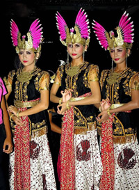
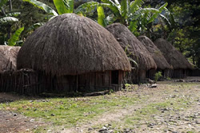
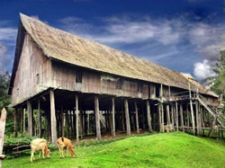
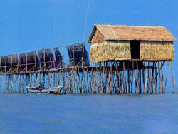
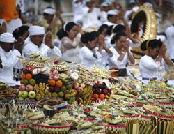

Hiburan
Reproduced with the permission of Department of Culture and Tourism, Indonesia and Mikhail Tsyganov, Ria Novosti.
Hiburan is another thing yang sangat penting di dunia remaja. Answer the following question.
- Hiburan macam apa yang paling menarik bagimu?
Saya paling suka
From what you have learnt about dunia remaja di Indonesia:
Hiburan macam apap populer di Indonesia di kalangan remaja?
Now read hiburan di Indonesia in the pojok budaya and complete the worksheet.
Look at the auxiliary verbs lagi and comparing and contrasting words in the kosa kata.
Consider whether you think the statements in the worksheet are true or false, and give a reason. Prepare to discuss your responses.
Tulislah!
Practise writing about entertainment in Indonesia, based on the information you have summarised in the worksheet. Compare and contrast the hiburan enjoyed by different groups.
Use at least five of the expressions in the tables you have just looked at in the kosa kata.
Tempat tinggal
Your tempat tinggal is another thing that impacts on your dunia. In Indonesia, the following all impact on dunia remaja and are all linked to location:
- physical geography (island, coastal, inland, mountain, plains)
- cultural geography (city/village)
- ethnic group culture
- religion (most Balinese are Hindu, for example, whereas most Javanese are Muslim).
Look at the language related to tempat tinggal in the kosa kata.
Write a paragraph in Indonesian about where you live and send it to your teacher.
Now look at the following photos of different areas of Indonesia.
Choose one photo and conduct a web search to find out more about that area.
Imagine you are a teenager living in one of the areas. Brainstorm the things that may make up your world, such as activities, work, entertainment, relationships and so on. (For example, teenagers living in mountain villages would be unlikely to be able to swim.)
|  |
Baliem valley, Papua.Reproduced with the permission of the Department of Culture and Tourism, Indonesia and Goenadi. |
|  |
Rumah Benteng (Benteng house) di Kalimantan Tengah.Reproduced with the permission of the Department of Culture and Tourism, Indonesia and Setiadi Darmawan. |
JakartaReproduced with the permission of the Department of Culture and Tourism, Indonesia and Bambang Wijanarko. |
|  |
Rumah tradisional di pantai Sumatera.Reproduced with the permission of the Department of Culture and Tourism, Indonesia. |
|  |
Upacara Hindu di Bali.Reproduced with the permission of the Department of Culture and Tourism, Indonesia and Iwan Kurniawan. |